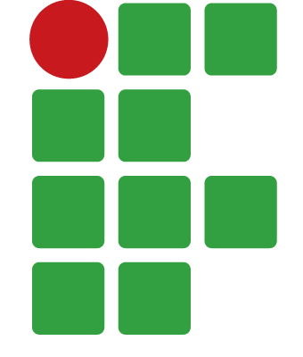
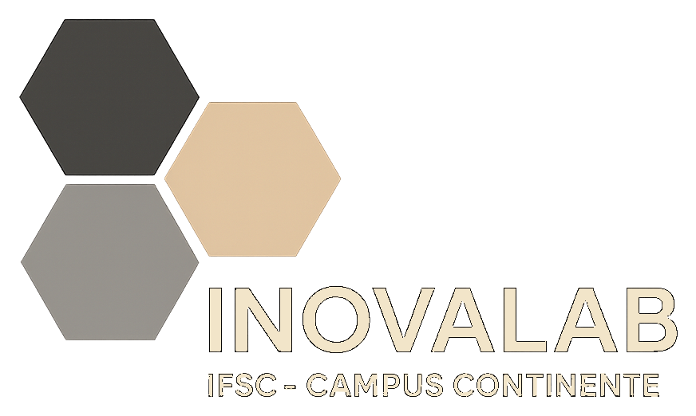

<!doctype html>
<html lang="pt-BR">
<head>
  <meta charset="utf-8" />
  <meta name="viewport" content="width=device-width, initial-scale=1" />
  <meta name="description" content="ClassAtelier — editor de aulas interativas, do texto ao SCORM." />
  <meta property="og:title" content="ClassAtelier — Editor de aulas interativas" />
  <meta property="og:description" content="Crie, revise e exporte aulas em JSON, HTML e SCORM." />
  <meta property="og:image" content="assets/brand/classatelier-cover.png" />
  <meta property="og:image:type" content="image/png" />
  <link rel="icon" href="assets/favicon.svg?v=20261028b" type="image/svg+xml" />
  <link rel="icon" href="assets/favicon-32.png?v=20261028b" type="image/png" sizes="32x32" />
  <link rel="apple-touch-icon" href="assets/apple-touch-icon.png?v=20261028b" sizes="180x180" />
  <link rel="manifest" href="assets/site.webmanifest?v=20261029" />
  <title>ClassAtelier — Editor de aulas interativas</title>
  <!-- O TEMA (tokens CSS + fontes + Font Awesome + a pele da ferramenta) é
       injetado por boot.js a partir do tema ativo (themes.js). Nada de marca
       fica fixo aqui — trocar de tema troca tudo isso de uma vez. -->
  <style>
    /* A barra superior responde à LARGURA DELA (coluna do meio), não da janela:
       os painéis laterais comem espaço, então medir a janela não bastava. */
    .tb { container-type: inline-size; container-name: tb; }
    .tb-more { display: none; }
    @container tb (max-width: 1560px) { .tb-title { display: none !important; } }
    @container tb (max-width: 1320px) { .tb-theme-name { max-width: 0; overflow: hidden; margin-left: -8px; } }
    @container tb (max-width: 1180px) { .tb-label { display: none; } .tb-title { display: none !important; } }
    @container tb (max-width: 960px) { .tb-theme-name { display: none; } .tb-seg-label { display: none; } .tb-sec { display: none !important; } .tb-more { display: block; } }
    @container tb (max-width: 600px) { .tb-theme { display: none; } }
    /* ── Builder chrome (neutral tool UI, so the warm Aula page pops) ── */
    :root {
      --tool-bg:      #EDEEF1;
      --tool-surface: #F7F8FA;
      --tool-panel:   #FFFFFF;
      --tool-line:    #DEE1E6;
      --tool-line-2:  #C9CDD4;
      --tool-ink:     #23262B;
      --tool-ink-2:   #5B6068;
      --tool-ink-3:   #8B9099;
      --tool-accent:  #D85C3C;   /* Aula terracotta — ties tool to brand */
      --tool-accent-soft: #FBE7E0;
      --tool-sel:     #2C5B7A;   /* Aula ocean — selection */
      --tool-sel-soft:#E2EEF5;
      --tool-radius:  10px;
      --tool-sans: "Geist", -apple-system, "Segoe UI", system-ui, sans-serif;
    }
    * { box-sizing: border-box; }
    html, body { margin: 0; height: 100%; }
    body {
      font-family: var(--tool-sans);
      background: var(--tool-bg);
      color: var(--tool-ink);
      overflow: hidden;
      -webkit-font-smoothing: antialiased;
    }
    :root { --credits-h: 30px; }
    #root { height: calc(100vh - var(--credits-h)); }

    /* Barra de créditos: fina, fixa embaixo, com as cores da marca (não muda com o tema) */
    .ca-credits { position: fixed; left: 0; right: 0; bottom: 0; height: var(--credits-h); z-index: 30; display: flex; align-items: center; justify-content: center; gap: 12px; padding: 0 14px; background: #14213d; color: #cbd5e4; border-top: 2px solid #d3b56e; font: 11px/1.2 var(--tool-sans); white-space: nowrap; overflow: hidden; }
    .ca-credits img { display: block; flex: none; object-fit: contain; }
    .ca-credits strong { color: #f8f5ec; font-weight: 600; }
    .ca-credits .ca-k { color: #d3b56e; font-weight: 700; letter-spacing: .14em; text-transform: uppercase; font-size: 9.5px; }
    .ca-credits .ca-sep { width: 1px; height: 16px; background: rgba(211,181,110,.7); flex: none; }
    .ca-credits a { color: #e1c986; text-decoration: none; font-weight: 600; }
    .ca-credits a:hover { text-decoration: underline; }
    @media (max-width: 1240px) { .ca-credits .ca-lume { display: none; } }
    @media (max-width: 1000px) { .ca-credits .ca-inst, .ca-credits .ca-sep.ca-s1 { display: none; } }
    @media (max-width: 700px) { .ca-credits .ca-ino, .ca-credits .ca-sep.ca-s2 { display: none; } .ca-credits { gap: 8px; font-size: 10.5px; } .ca-credits .ca-k { display: none; } }
    @media (max-width: 400px) { .ca-credits .ca-ver-name { display: none; } }
    @media print { .ca-credits { display: none; } #root { height: auto; } }

    /* contentEditable placeholder */
    [contenteditable][data-placeholder]:empty:before {
      content: attr(data-placeholder);
      color: var(--ink-faint);
      pointer-events: none;
    }
    [contenteditable] { outline: none; }
    [contenteditable]:focus { outline: none; }

    /* thin scrollbars in tool panels */
    .tool-scroll::-webkit-scrollbar { width: 10px; height: 10px; }
    .tool-scroll::-webkit-scrollbar-thumb { background: var(--tool-line-2); border-radius: 20px; border: 3px solid transparent; background-clip: content-box; }
    .tool-scroll::-webkit-scrollbar-thumb:hover { background: var(--tool-ink-3); background-clip: content-box; }

    /* canvas mat */
    .canvas-mat { background: var(--tool-bg); }
    .lesson-paper {
      background: var(--paper);
      box-shadow: 0 1px 3px rgba(20,20,30,0.08), 0 12px 40px rgba(20,20,30,0.10);
    }

    /* block selection chrome */
    .lz-block { position: relative; }
    .lz-block.is-selected { outline: 2px solid var(--tool-sel); outline-offset: -2px; }
    .lz-block:not(.is-selected):hover { outline: 1.5px dashed var(--tool-line-2); outline-offset: -2px; }

    .lz-dropline { height: 0; position: relative; }
    .lz-dropline.active::after {
      content: ""; position: absolute; left: 0; right: 0; top: -2px; height: 4px;
      background: var(--tool-accent); border-radius: 3px;
      box-shadow: 0 0 0 3px var(--tool-accent-soft);
    }

    /* Inline "+" insert affordance between blocks (Wix-style) */
    .lz-add {
      position: absolute; left: 50%; top: 50%; transform: translate(-50%, -50%);
      z-index: 22; width: 26px; height: 26px; border-radius: 50%;
      background: var(--tool-accent); color: #fff; border: 2px solid #fff;
      cursor: pointer; display: grid; place-items: center; padding: 0;
      box-shadow: 0 2px 8px rgba(0,0,0,0.22);
      opacity: 0; transition: opacity 120ms, transform 120ms;
      pointer-events: none;
    }
    .lz-insert:hover .lz-add, .lz-add.always, .lz-add.is-open { opacity: 1; pointer-events: auto; }
    .lz-add:hover { transform: translate(-50%, -50%) scale(1.14); }
    .lz-insert:hover::before {
      content: ""; position: absolute; left: 10px; right: 10px; top: 50%; height: 2px;
      transform: translateY(-50%); background: var(--tool-accent-soft); border-radius: 2px;
      pointer-events: none;
    }

    .palette-item {
      cursor: grab; user-select: none;
    }
    .palette-item:active { cursor: grabbing; }

    /* Topic editing: child selection + inline "+" inside a topic band */
    .lz-topic-block.is-selected { outline-color: var(--tool-accent); }
    .lz-child { position: relative; border-radius: 6px; transition: box-shadow 120ms; }
    .lz-child:not(.is-selected):hover { box-shadow: 0 0 0 1.5px var(--tool-line-2); }
    .lz-child.is-selected { box-shadow: 0 0 0 2px var(--tool-sel); }
    .lz-topic-block.is-child-dragover { box-shadow: 0 0 0 3px var(--tool-sel), 0 0 0 7px var(--tool-sel-soft); }
    /* "+" handle floating in the gap above each child (insert before it) */
    .lz-child-insert { position: absolute; left: 0; right: 0; top: -9px; height: 18px; z-index: 18; pointer-events: auto; }
    .lz-child-insert.is-dragover::after { content: ""; position: absolute; left: 0; right: 0; top: 8px; height: 2px; border-radius: 2px; background: var(--tool-sel); box-shadow: 0 0 0 3px var(--tool-sel-soft); }
    .lz-child-insert .lz-add-child {
      position: absolute; left: 50%; top: 0; transform: translate(-50%, -50%);
      width: 22px; height: 22px;
    }
    .lz-child:hover > .lz-child-insert .lz-add-child,
    .lz-add-child.always, .lz-add-child.is-open { opacity: 1; pointer-events: auto; }
    /* tail "+" after the last child, sits at the bottom of the topic */
    .lz-child-insert.is-tail { position: relative; top: 0; height: 34px; pointer-events: auto; }
    .lz-child-insert.is-tail .lz-add-child { top: 50%; opacity: 1; pointer-events: auto; }

    /* Nested blocks inside accordion tabs and timeline events */
    .lz-nested-list { position: relative; margin-top: 18px; padding: 12px 14px 4px; border: 1px dashed var(--tool-line-2); border-radius: 10px; background: color-mix(in srgb, #fff 78%, transparent); }
    .lz-nested-list__label { margin-bottom: 8px; font-family: var(--tool-sans); font-size: 10.5px; font-weight: 700; letter-spacing: .07em; text-transform: uppercase; color: var(--tool-ink-3); }
    .lz-nested-child { position: relative; margin: 10px 0; padding: 10px; border-radius: 8px; background: color-mix(in srgb, var(--paper) 86%, transparent); }
    .lz-nested-child:hover { box-shadow: 0 0 0 1.5px var(--tool-line-2); }
    .lz-nested-child.is-selected { box-shadow: 0 0 0 2px var(--tool-sel); }
    .lz-nested-insert { min-height: 24px; display: grid; place-items: center; position: relative; }
    .lz-nested-insert.is-dragover::after { content: ""; position: absolute; left: 0; right: 0; top: 50%; height: 3px; background: var(--tool-sel); box-shadow: 0 0 0 3px var(--tool-sel-soft); border-radius: 3px; }
    .lz-nested-add { position: relative; z-index: 2; display: inline-flex; align-items: center; gap: 7px; padding: 7px 11px; border: 1px dashed var(--tool-line-2); border-radius: 8px; background: #fff; color: var(--tool-ink-2); font: 600 11.5px var(--tool-sans); cursor: pointer; opacity: .35; }
    .lz-nested-insert:hover .lz-nested-add, .lz-nested-insert.is-tail .lz-nested-add { opacity: 1; }

    button { font-family: inherit; }
  </style>
</head>
<body>
  <div id="root"></div>
  <footer class="ca-credits" aria-label="Créditos">
    
    <span class="ca-inst"><strong>Instituto Federal de Santa Catarina</strong> · Câmpus Florianópolis–Continente</span>
    <span class="ca-sep ca-s1" aria-hidden="true"></span>
    <span><span class="ca-k">Desenvolvido pelos</span> <strong>Profs. Rogério G. Bittencourt &amp; Luís Lindner</strong></span>
    
    <span class="ca-sep ca-s2" aria-hidden="true"></span>
    <span><span class="ca-ver-name">ClassAtelier </span><span id="ca-ver"></span><span class="ca-lume"> · evolução do LumeAuthor, do Prof. Luís Lindner</span></span>
  </footer>

  <!-- React + Babel (pinned) -->
  <script src="https://unpkg.com/react@18.3.1/umd/react.development.js" integrity="sha384-hD6/rw4ppMLGNu3tX5cjIb+uRZ7UkRJ6BPkLpg4hAu/6onKUg4lLsHAs9EBPT82L" crossorigin="anonymous"></script>
  <script src="https://unpkg.com/react-dom@18.3.1/umd/react-dom.development.js" integrity="sha384-u6aeetuaXnQ38mYT8rp6sbXaQe3NL9t+IBXmnYxwkUI2Hw4bsp2Wvmx4yRQF1uAm" crossorigin="anonymous"></script>
  <script src="https://unpkg.com/@babel/standalone@7.29.0/babel.min.js" integrity="sha384-m08KidiNqLdpJqLq95G/LEi8Qvjl/xUYll3QILypMoQ65QorJ9Lvtp2RXYGBFj1y" crossorigin="anonymous"></script>

  <!-- JSZip for SCORM packaging -->
  <script src="https://cdnjs.cloudflare.com/ajax/libs/jszip/3.10.1/jszip.min.js" integrity="sha512-XMVd28F1oH/O71fzwBnV7HucLxVwtxf26XV8P4wPk26EDxuGZ91N8bsOttmnomcCD3CS5ZMRL50H0GgOHvegtg==" crossorigin="anonymous" referrerpolicy="no-referrer"></script>

  <!-- Real Aula kit (components self-assign to window) -->
  <!-- Tema + componentes do kit + módulos do builder são injetados aqui,
       em ordem, por boot.js — a partir do tema ativo (themes.js). -->
  <script>window.AULA_BASE = "";</script>
  <script src="pasta.js?v=20261030-v1.5.0"></script>
  <script src="themes.js?v=20261030-v1.5.0"></script>
  <script src="boot.js?v=20261030-v1.5.0"></script>
  <script>(function(){var e=document.getElementById("ca-ver");if(e)e.textContent="v"+(window.CLASSATELIER_VERSION||"");})();</script>
</body>
</html>
